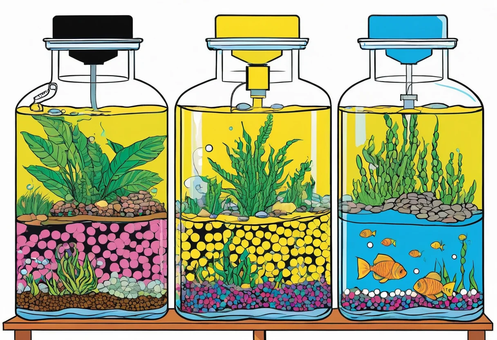

Braucht dein Aquarium zusätzliches CO₂?
Pflanzen benötigen Kohlenstoff, aber nicht jedes bepflanzte Aquarium braucht eine CO₂-Anlage. Für den Einstieg sind Pflanzen mit geringem Bedarf und eine dazu passende Beleuchtung oft einfacher. Eine zusätzliche Gaszufuhr ist eine bewusste technische Entscheidung, kein Pflichtkauf und kein garantiertes Mittel gegen Algen.
Bevor du aufrüstest, prüfe Pflanzenarten, Licht, Wasserwerte und Besatz. Mehr Gas behebt weder ungeeignete Haltungsbedingungen noch automatisch jeden Pflanzenschaden. Wer die Anlage nicht zuverlässig einstellen und überwachen kann, wählt besser ein Pflanzkonzept ohne zusätzliche CO₂-Zufuhr.
CO₂ ist nicht für alle Tiere unbedenklich
Zu viel gelöstes CO₂ kann Fische schädigen. Das Merck Veterinary Manual beschreibt, dass hohe CO₂-Werte die Abgabe des Gases aus dem Blut behindern und eine Übersäuerung verursachen können. Sauerstoffmangel kann das verschärfen, ist aber nicht dieselbe Störung. Sauerstoffproduktion der Pflanzen macht eine hohe CO₂-Dosis deshalb nicht automatisch sicher.
Es gibt hier keinen für alle Fische, Garnelen und Becken garantierten Zielwert. Die oft genannten 20–30 mg/l sind kein allgemeiner tiermedizinischer Unbedenklichkeitsbereich. Auch langsames Hochregeln verhindert nicht jede Überdosierung. Anforderungen des konkreten Besatzes klären und im Zweifel auf Zusatzgas verzichten beziehungsweise fachkundigen Rat einholen, statt einen Pflanzenzielwert zu erzwingen.
Druckgas und Bio-CO₂ sind unterschiedliche Systeme
Bei Druckgas liefert die Flasche den Gasdruck. Druckminderer und Feineinstellung regeln die Zufuhr; eine elektrische Gaspumpe gehört nicht zwingend dazu. Ein geeignetes Magnetventil ermöglicht eine zeitgesteuerte Unterbrechung. Kompatible Schläuche, Rücklaufsicherung, Diffusor oder Reaktor müssen nach der konkreten Herstelleranleitung zusammenpassen.
Bio-CO₂ entsteht beispielsweise durch Gärung und kann weiterproduziert werden, wenn die Ableitung blockiert wird. Nicht einfach einen Schlauch abklemmen oder ein Druckgas-Magnetventil nachrüsten. Aufbau und mögliche Nachtlösung ausschließlich nach Anleitung des jeweiligen Systems wählen. Eine pauschale Umbauanleitung wäre gefährlich.
Einstellen heißt messen und beobachten
- Vorher prüfen: Tierarten, Ausgangswasser, pH, Temperatur und Gasaustausch beurteilen. Messgeräte und Tests nach ihrer Anleitung benutzen.
- Modellgerecht montieren: Keine improvisierten Druckanschlüsse verwenden. Die Anleitung bestimmt Einbaufolge, Rücklaufschutz und zulässige Komponenten.
- Vorsichtig einstellen: Keine Blasen-pro-Liter-Formel als sichere Dosis übernehmen. Blasengröße, Lösung im Wasser und Gasaustausch unterscheiden sich.
- Verlauf kontrollieren: Nicht nur einmal am Mittag prüfen. Werte und Tierverhalten auch nach Schaltvorgängen und zu Beginn der Beleuchtung beobachten. Änderungen dokumentieren.
- Nicht blind nachregeln: Dauertests reagieren verzögert. Die jeweilige Indikatorlösung und Farbskala beachten; nicht ständig nachdosieren, um möglichst schnell Grün zu erreichen.
Ein Dauertest ist eine zusätzliche Kontrolle, kein Alarmgerät und keine Sicherheitsfreigabe für den Besatz. Er misst auch nicht den Sauerstoffgehalt. Die Berechnung aus pH und Karbonathärte kann durch andere Säuren und Puffer verfälscht werden. Geräte- und Testgrenzen berücksichtigen; ruhiges Verhalten allein beweist ebenfalls keine langfristige Verträglichkeit.
Nachtabschaltung und Oberflächenbewegung
Nachts findet keine lichtabhängige Photosynthese statt; Atmung verbraucht weiterhin Sauerstoff und setzt CO₂ frei. Ein für die Anlage geeignetes Ventil kann zusätzliche Gaszufuhr unterbrechen. Einen pauschalen Start zwei Stunden vor Lichtbeginn empfehlen wir nicht: Schaltzeiten müssen zum konkreten System und zum kontrollierten Verlauf passen, nicht zu einer starren Uhrzeitregel.
Ausreichenden Gasaustausch und die benötigte Belüftung nicht zugunsten niedriger Gas-Nachfüllkosten einschränken. Nachtabschaltung ersetzt weder die Kontrolle der Wasserwerte noch einen funktionierenden Filter. Zur Kostenrechnung siehe Stromkosten und CO₂-Gasverbrauch.
Warnzeichen: Zufuhr stoppen, nicht auf den Test warten
Bei plötzlich schneller Atmung, auffälligem Oberflächenstehen, Benommenheit oder Orientierungsproblemen zusätzliche CO₂-Zufuhr sofort sicher stoppen und kräftig belüften beziehungsweise den Gasaustausch verstärken. Nicht erst auf einen Farbumschlag warten. Diese Symptome sind keine eindeutige Diagnose: Auch Sauerstoffmangel, Nitrit oder Erkrankungen können dahinterstecken. Wasserwerte prüfen und bei schweren oder anhaltenden Symptomen umgehend fischkundige tierärztliche Hilfe holen.
Druckgasflasche sicher handhaben
Die JBL-Anleitung für PROFLORA-Druckgassysteme ist ein Beispiel für konkrete Montage- und Sicherheitshinweise, keine Freigabe für andere Fabrikate. Eigene Flaschen und Armaturen nur bestimmungsgemäß betreiben, aufrecht gegen Umfallen sichern und vor Erwärmung schützen. Für ausreichende Raumlüftung sorgen. Keine beschädigten Komponenten einsetzen oder Druckverbindungen unter Druck lösen; Wechsel und Druckentlastung nach Herstelleranleitung durchführen.
Undichtigkeiten mit dem vom Hersteller vorgesehenen Verfahren prüfen, nicht anhand von Geruch, Zischgeräusch oder vermeintlichen „CO₂-Feuchtigkeitsindikatoren“ ausschließen. Kohlendioxid ist geruchlos; eine fehlende Wahrnehmung beweist keine Dichtheit. Bei vermutetem größerem Austritt Menschen und Tiere aus dem Gefahrenbereich bringen; nicht in schlecht belüfteten Räumen nach dem Leck suchen.
Häufige Fragen
Sind 20–30 mg/l für jedes Aquarium sicher?
Nein. Ein Pflanzenzielwert ist keine universelle Unbedenklichkeitsgrenze für Tiere. Besatz, Wasserbedingungen und Überwachung müssen berücksichtigt werden.
Ist ein grüner Dauertest ein Entwarnungssignal?
Nein. Er reagiert verzögert, verwendet eine produktspezifische Skala und ersetzt weder Sauerstoffkontrolle noch die Beobachtung und fachliche Beurteilung der Tiere.
Verschwinden Pinselalgen mit mehr CO₂?
Das ist nicht garantiert. Algenbefall allein diagnostiziert keinen CO₂-Mangel. Licht, Pflege, Nährstoffversorgung und Technik prüfen, statt auf Verdacht mehr Gas zuzuführen.
Fazit
CO₂-Düngung kann zu einem gezielt geplanten Pflanzenaquarium gehören. Sie ist weder für jeden Einstieg nötig noch automatisch harmlos. Passende Technik, überprüfbare Einstellungen und das Wohl der Tiere haben Vorrang vor maximalem Pflanzenwuchs.